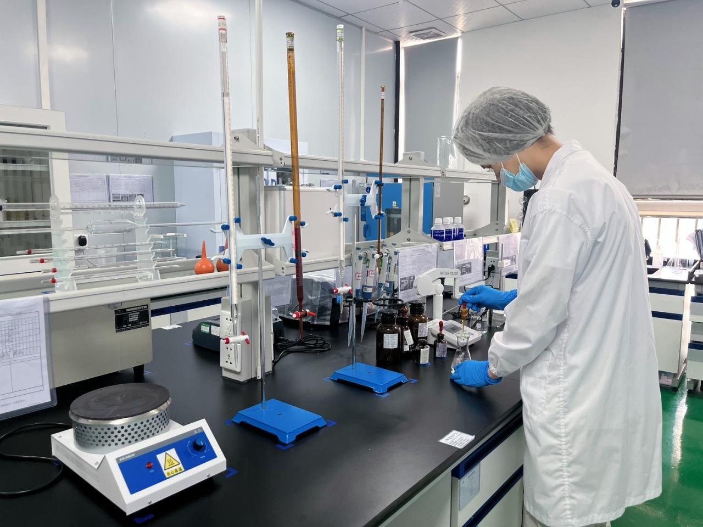

01 / Küche
Küche — Untertisch
Versteckt unter der Spüle — leistungsstarke RO für die Familienküche.
Repräsentatives Modell:RP-U09 — 800–1400 GPD · 4 Optionen.
ROPureOEM / OEM-Produktstudio
Beginnen Sie mit einem bestätigten Modell. Passen Sie es an Ihren Markt an. Geben Sie Ihr Muster frei.
Modelle entdecken Besprechen Sie Ihr Projekt mit uns
Produktauswahl · Eigenmarke · Exportabwicklung

Nach Einsatzbereich auswählen
01 / Küche
Versteckt unter der Spüle — leistungsstarke RO für die Familienküche.
Repräsentatives Modell:RP-U09 — 800–1400 GPD · 4 Optionen.

02 / Auftischgeräte
Frisch gemahlener Kaffee und RO-gereinigtes Wasser aus einem Auftischgerät.
Repräsentatives Modell:RP-C11 — Kaffee aus frisch gemahlenen Bohnen · RO-gereinigtes Wasser.

03 / Gewerbe
Freistehendes heißes, kaltes und Eiswasser für Büros, Schulen und Gemeinschaftsräume.
Repräsentatives Modell:RP-C23 — 100G RO · 50–100 Personen.

04 / Gesamtes Haus
Zentrale Enthärtung für das gesamte Haus.
Repräsentatives Modell:RP-W01-Serie — 32,000–64,000 Grain · 3 Größen.
Ein genauerer Blick
Bestätigte Katalogmodelle — prüfen Sie zuerst die Spezifikationen. MOQ: 200 Stück pro Modell.
AuftischgeräteBean-to-Cup-4-in-1-Kaffeemaschine mit RO-Reinigung
 Auftischgeräte
AuftischgeräteSprudel-, Kalt- und Heißwasser — zwei Varianten
 Untertisch
UntertischUntertisch-Wasserstoffwasser-RO-Reiniger
 Wasserhahn
Wasserhahn360° drehbarer Wasserhahnfilter
 Dusche
DuscheRechteckiger Duschfilter
 Untertisch
UntertischWerkzeugloses RO-System mit herausziehbarer Kartusche
 Auftischgeräte
AuftischgeräteRO-Reiniger mit Heizkanne
 Auftischgeräte
AuftischgeräteRO-Reiniger mit Eis, heißem und kaltem Wasser

OEM vs. ODM
Wählen Sie ein bestätigtes Modell und machen Sie es zu Ihrem: Logo, Farbe, Filter, Wasserhahn, Verpackung.
Passen Sie Aufbau, Funktion und Form an Ihr Briefing an. Jedes Briefing erfordert zuerst eine technische Bewertung.
Vom Modell zu Ihrer Marke
Werk & QS




Werks- und QS-Fotos: Produktion, Prüfung und Versand.
Zertifizierung
Nennen Sie uns Ihr Modell und Ihren Zielmarkt — wir bestätigen vor Ihrer Bestellung die genaue Liste.
Typische Märkte:EU · UK · USA · Naher Osten · Südostasien · Australien
Andere Märkte, einschließlich CB wo zutreffend, werden je Modell auf Anfrage bestätigt.

FAQ auf der Startseite
200 Stück pro Modell.
Ja — Muster sind kostenpflichtig, und die Kosten werden bei Ihrer ersten Großbestellung erstattet. Geben Sie das Muster, einschließlich Branding und Verpackung, vor der Großserienproduktion frei.
Die Lieferzeit wird je Angebot bestätigt — sie hängt von Modell, Menge und Zertifizierung ab.
Die Zahlung ist vor dem Versand fällig. Wir bieten keine Zahlungsziele an.
Je Markt, je Modell und je Auftrag bestätigt. Nennen Sie uns Ihr Modell und Ihren Zielmarkt, und wir bestätigen vor Ihrer Bestellung die genaue Liste.
Ratgeber

Kaufberater
Die MOQ beträgt 200 Stück pro Modell für Eigenmarken-Wasserreiniger. Erst Muster, Gebühr bei Ihrer ersten Großbestellung erstattet, 40 Tage bis zum Versand nach Musterfreigabe.

Kaufberater
Passen Sie die RO-Leistung an Ihr Zulaufwasser an, bevor Sie ein Modell wählen — Auftisch-, Untertisch- und Spenderleistungen im Vergleich.

Kaufberater
Spannung und Frequenz sind an das Zielland anpassbar — bestätigen Sie sie je Modell und Auftrag.
Nennen Sie uns Ihren Markt, Produkttyp und Menge.